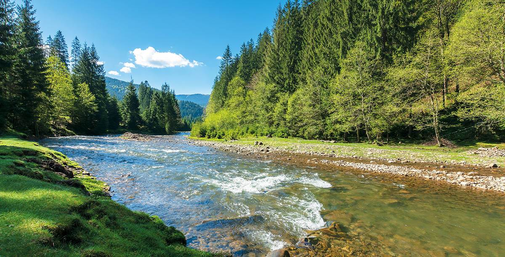
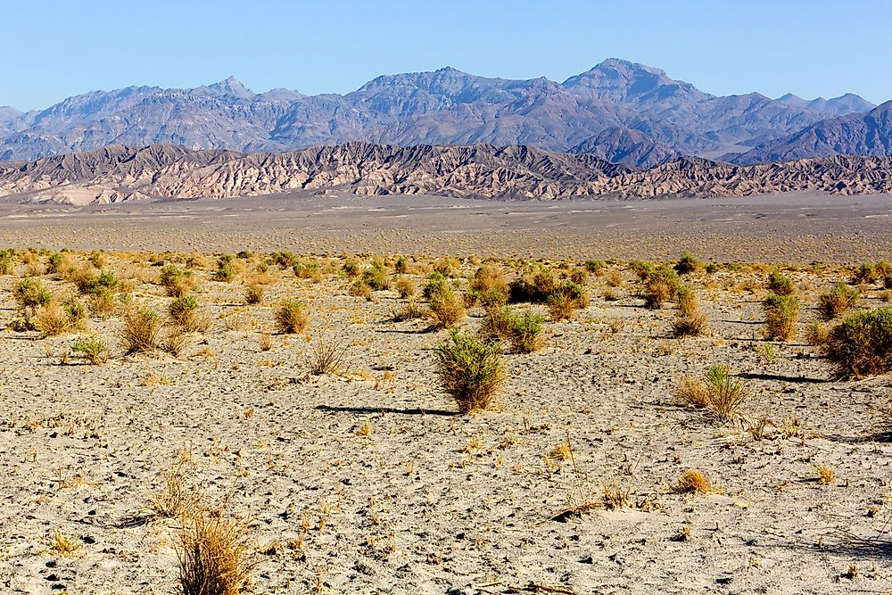

Climate zones
Explore the four major climate zones that shape life, ecosystems, and geography across our planet.

01 — Tropical
Hot & humid year-round
Hot and humid year-round, with frequent rainfall. Found near the equator.
02 — Temperate
Four distinct seasons
Moderate temperatures with distinct seasons like spring, summer, autumn, and winter.


03 — Arid
Extreme dryness & heat
Very dry climates with little rainfall, often featuring deserts and extreme temperatures.
04 — Polar
Frozen & perpetually cold
Extremely cold regions with ice and snow, found near the poles.